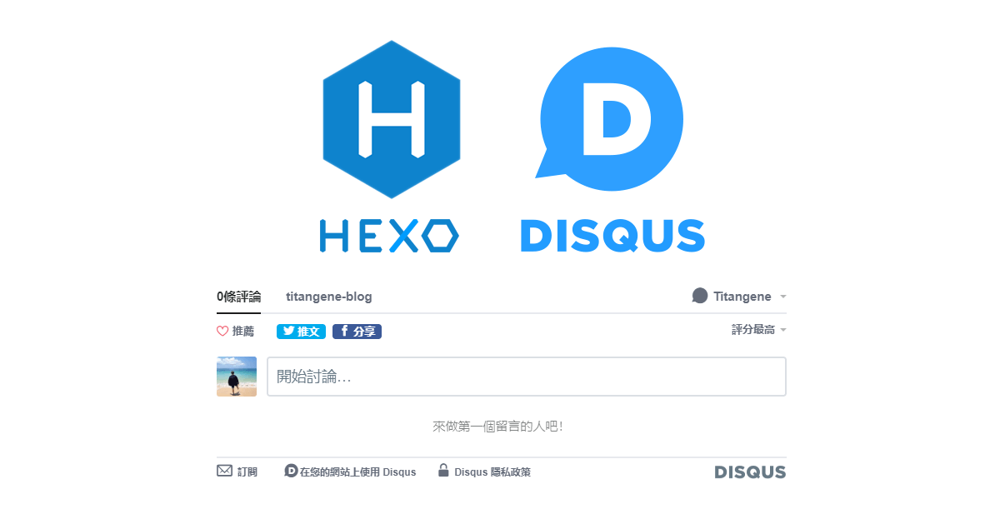
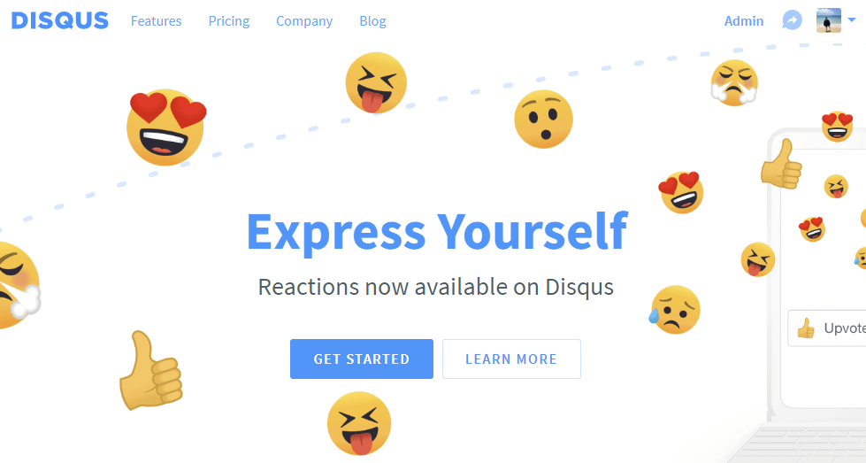
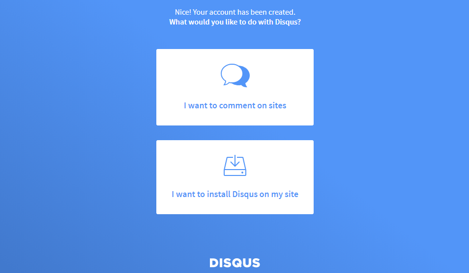
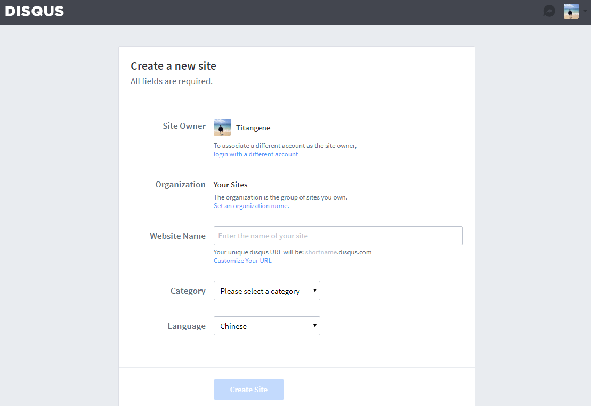
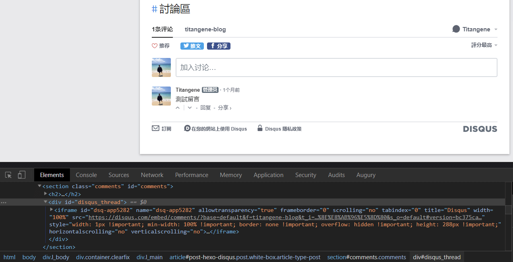
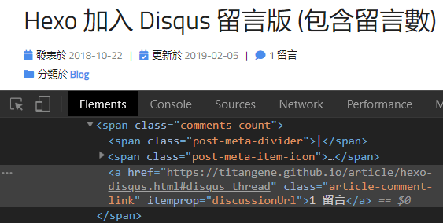
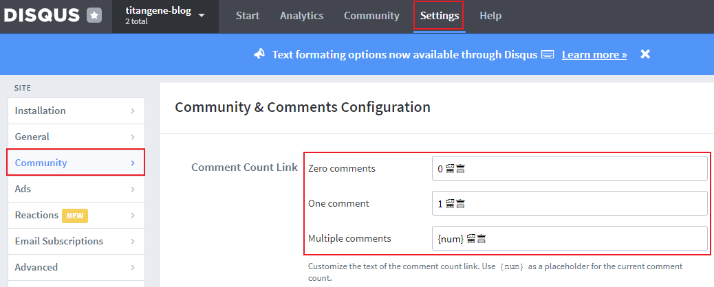
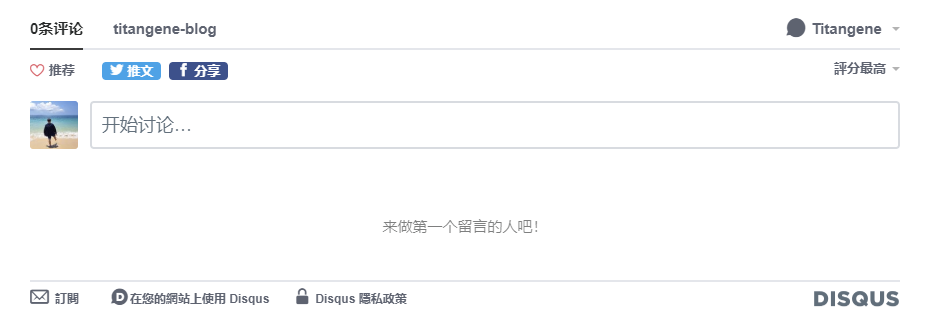
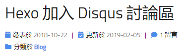

<!DOCTYPE html><html><head><meta charset="utf-8"><title>Hexo 加入 Disqus 留言版 (包含留言數) | Titangene Blog</title><meta http-equiv="X-UA-Compatible" content="IE=edge"><meta name="viewport" content="width=device-width,initial-scale=1,maximum-scale=1"><meta name="HandheldFriendly" content="True"><meta name="apple-mobile-web-app-capable" content="yes"><meta name="author" content="Titangene"><link rel="shortcut icon" href="/favicon.ico"><link rel="alternate" href="/atom.xml" title="Titangene Blog"><meta name="description" content="Blog 最重要的是可以增進技術的交流，而交流就可以透過留言版來達成。大部分的 Blog 在每篇文章下面都會有留言板，而最常見的就是 Disqus 留言板，因此本篇會說明如何將 Disqus 留言板和各文章的留言數加入 Hexo 的主題中。"><meta property="og:type" content="article"><meta property="og:title" content="Hexo 加入 Disqus 留言版 (包含留言數)"><meta property="og:url" content="https://titangene.github.io/article/hexo-disqus.html"><meta property="og:site_name" content="Titangene Blog"><meta property="og:description" content="Blog 最重要的是可以增進技術的交流，而交流就可以透過留言版來達成。大部分的 Blog 在每篇文章下面都會有留言板，而最常見的就是 Disqus 留言板，因此本篇會說明如何將 Disqus 留言板和各文章的留言數加入 Hexo 的主題中。"><meta property="og:locale" content="zh_TW"><meta property="og:image" content="https://titangene.github.io/images/cover/hexo-disqus.png"><meta property="article:published_time" content="2018-10-22T14:40:00.000Z"><meta property="article:modified_time" content="2019-05-12T07:25:56.244Z"><meta property="article:author" content="Titangene"><meta property="article:tag" content="Hexo"><meta property="article:tag" content="Comment"><meta name="twitter:card" content="summary_large_image"><meta name="twitter:image" content="https://titangene.github.io/images/cover/hexo-disqus.png"><meta name="twitter:creator" content="@titangeneTW"><meta name="twitter:site" content="@titangene_blog"><meta property="fb:admins" content="100001106016019"><meta property="fb:app_id" content="2470546159839111"><meta property="og:image:width" content="1200"><meta property="og:image:height" content="630"><meta name="google-site-verification" content="AaJ39L7h-nWwJjXJMhAMtXSF6H6BUgGWXC80kYvLic8"><link rel="stylesheet" href="//fonts.googleapis.com/css?family=Inconsolata|Titillium+Web"><link href="https://fonts.googleapis.com/css?family=Source+Code+Pro&display=swap" rel="stylesheet"><link rel="stylesheet" href="//use.fontawesome.com/releases/v5.7.0/css/all.css" integrity="sha384-lZN37f5QGtY3VHgisS14W3ExzMWZxybE1SJSEsQp9S+oqd12jhcu+A56Ebc1zFSJ" crossorigin="anonymous"><link rel="stylesheet" href="/style.css"><script async src="https://www.googletagmanager.com/gtag/js?id=UA-129758206-1"></script><script>!function(a){function n(){dataLayer.push(arguments)}a.dataLayer=a.dataLayer||[],n("js",new Date),n("config","UA-129758206-1")}(window)</script><script>function setLoadingBarProgress(e){document.getElementById("loading-bar").style.width=e+"%"}</script><meta name="generator" content="Hexo 4.2.0"><link rel="alternate" href="/atom.xml" title="Titangene Blog" type="application/atom+xml"></head></html><body><div id="loading-bar-wrapper"><div id="loading-bar"></div></div><script>setLoadingBarProgress(20)</script><header class="l_header"><div class="wrapper"><div class="nav-main container container--flex"><a class="logo flat-box" href="/">Titangene Blog</a><div class="menu"><ul class="h-list"><li><a class="flat-box nav-home" href="/">Home</a></li><li><a class="flat-box nav-archives" href="/archives">Archives</a></li></ul><div class="underline"></div></div><div class="m_search"><form name="searchform" class="form u-search-form"><input type="text" class="input u-search-input" placeholder="Search"> <i class="fas fa-search"></i></form></div><ul class="switcher h-list"><li class="s-search"><a class="fas fa-search" href="javascript:void(0)"></a></li><li class="s-menu"><a class="fas fa-bars" href="javascript:void(0)"></a></li></ul></div><div class="nav-sub container container--flex"><a class="logo flat-box" href="/">Titangene Blog</a><ul class="switcher h-list"><li class="s-comment"><a class="far fa-comment-alt" href="javascript:void(0)"></a></li><li class="s-top"><a class="fas fa-arrow-up" href="javascript:void(0)"></a></li><li class="s-toc"><a class="fas fa-list-ol" href="javascript:void(0)"></a></li></ul></div></div></header><aside class="menu-phone"><nav><a href="/" class="nav-home nav">Home </a><a href="/archives" class="nav-archives nav">Archives</a></nav></aside><script>setLoadingBarProgress(40)</script><div class="l_body"><div class="container clearfix"><div class="l_main"><article id="post-hexo-disqus" class="post white-box article-type-post" itemscope itemprop="blogPost"><section class="meta"><h2 class="title"><a href="/article/hexo-disqus.html">Hexo 加入 Disqus 留言版 (包含留言數)</a></h2><span class="post-time"><span class="post-meta-item-icon"><i class="fa fa-calendar"></i> </span><span class="post-meta-item-text">發表於</span> <time title="建立時間：2018-10-22 22:40:00" itemprop="dateCreated datePublished" datetime="2018-10-22T22:40:00+08:00">2018-10-22 </time><span class="post-meta-divider">|</span> <span class="post-meta-item-icon"><i class="fa fa-calendar-check"></i> </span><span class="post-meta-item-text">更新於</span> <time title="修改時間：2019-05-12 15:25:56" itemprop="dateModified" datetime="2019-05-12T15:25:56+08:00">2019-05-12</time></span> <span class="comments-count"><span class="post-meta-divider">|</span> <span class="post-meta-item-icon"><i class="fas fa-comment"></i> </span><a href="https://titangene.github.io/article/hexo-disqus.html#disqus_thread" class="article-comment-count" data-disqus-identifier="article/hexo-disqus.html" itemprop="discussionUrl"></a></span><div class="post-category"><span class="post-meta-item-icon"><i class="fa fa-folder"></i> </span><span class="post-meta-item-text">分類於</span> <span itemprop="about" itemscope itemtype="http://schema.org/Thing"><a href="/categories/blog/" itemprop="url" rel="index"><span itemprop="name">Blog</span></a></span></div></section><section class="toc-wrapper"><h3>目錄</h3><ol class="toc"><li class="toc-item toc-level-2"><a class="toc-link" href="#申請網站留言版帳號"><span class="toc-text">申請網站留言版帳號</span></a></li><li class="toc-item toc-level-2"><a class="toc-link" href="#設定-Hexo"><span class="toc-text">設定 Hexo</span></a><ol class="toc-child"><li class="toc-item toc-level-3"><a class="toc-link" href="#加入-Disqus-script"><span class="toc-text">加入 Disqus script</span></a></li><li class="toc-item toc-level-3"><a class="toc-link" href="#新增-Disqus-留言版"><span class="toc-text">新增 Disqus 留言版</span></a></li><li class="toc-item toc-level-3"><a class="toc-link" href="#新增-Disqus-留言數"><span class="toc-text">新增 Disqus 留言數</span></a></li></ol></li><li class="toc-item toc-level-2"><a class="toc-link" href="#Demo"><span class="toc-text">Demo</span></a></li><li class="toc-item toc-level-2"><a class="toc-link" href="#參考來源"><span class="toc-text">參考來源</span></a></li></ol></section><section class="article typo"><div class="article-entry" itemprop="articleBody"><p></p><p>Blog 最重要的是可以增進技術的交流，而交流就可以透過留言版來達成。大部分的 Blog 在每篇文章下面都會有留言板，而最常見的就是 Disqus 留言板，因此本篇會說明如何將 Disqus 留言板和各文章的留言數加入 Hexo 的主題中。</p><a id="more"></a><h2 id="申請網站留言版帳號"><a class="header-anchor" href="#申請網站留言版帳號"></a>申請網站留言版帳號</h2><p>至 <a href="https://disqus.com/" target="_blank" rel="noopener">Disqus</a> 首頁註冊帳號後並登入，接著點擊首頁的「GET STARTED」：</p><p></p><p>選擇「I want to install Disqus on my site」選項：</p><p></p><p>需要輸入的欄位：</p><ul><li>Websit Name：自訂 short name，且是唯一，像我是設定 titangene-blog。short name 會在設定 Hexo 時需要</li><li>Category：類別，自行選擇</li><li>Language：語言，自行選擇</li></ul><p>填寫後點擊「Create Site」：</p><p></p><h2 id="設定-Hexo"><a class="header-anchor" href="#設定-Hexo"></a>設定 Hexo</h2><p>在 <a href="https://github.com/stkevintan/hexo-theme-material-flow" target="_blank" rel="noopener">material-flow</a> 主題內的 <code>_config.yml</code> 原有設定是使用 <code>disqus_shortname</code> 參數來設定 Disqus 的 short name：</p><figure class="highlight yaml"><table><tr><td class="gutter"><pre><span class="line">1</span><br></pre></td><td class="code"><pre><code class="hljs yaml"><span class="hljs-attr">disqus_shortname:</span> <span class="hljs-string">your_disqus_short_name</span><br></code></pre></td></tr></table></figure><p>但我想在 blog 加上留言數，所以才將參數設定改成下面內容：</p><ul><li><code>enable</code>：設定 <code>true</code> 或 <code>false</code> 來決定是否要啟用 Disqus 的留言版功能</li><li><code>shortname</code>：設定你的 Disqus 的 short name</li><li><code>count</code>：設定 <code>true</code> 或 <code>false</code> 來決定是否要顯示文章的留言數</li></ul><figure class="highlight yaml"><table><tr><td class="gutter"><pre><span class="line">1</span><br><span class="line">2</span><br><span class="line">3</span><br><span class="line">4</span><br><span class="line">5</span><br></pre></td><td class="code"><pre><code class="hljs yaml"><span class="hljs-comment"># Comments</span><br><span class="hljs-attr">disqus:</span><br>  <span class="hljs-attr">enable:</span> <span class="hljs-literal">true</span><br>  <span class="hljs-attr">shortname:</span> <span class="hljs-string">your_disqus_short_name</span><br>  <span class="hljs-attr">count:</span> <span class="hljs-literal">true</span><br></code></pre></td></tr></table></figure><p>那接著就是將 Disqus 的留言版功能加入主題中，主要分成幾個步驟：</p><ol><li>加入 Disqus script</li><li>新增 Disqus 留言版</li><li>新增 Disqus 留言數</li></ol><p>如果在剛剛上面的 <code>count</code> 參數設定為 <code>false</code> 則可以跳過第三個步驟 <a href="#%E6%96%B0%E5%A2%9E-disqus-%E7%95%99%E8%A8%80%E6%95%B8">新增 Disqus 留言數</a>。</p><p>下面提供的程式碼可適用於 Hexo 的 <a href="https://github.com/stkevintan/hexo-theme-material-flow" target="_blank" rel="noopener">material-flow</a> 主題，HTML 結構可依各自使用的版型或需求來修改。若想直接看我設定的原始碼，可至此 Blog 的 GitHub Repo「<a href="https://github.com/titangene/hexo-blog/tree/master/themes/material-flow/layout" target="_blank" rel="noopener">titangene/hexo-blog</a>」查看。</p><h3 id="加入-Disqus-script"><a class="header-anchor" href="#加入-Disqus-script"></a>加入 Disqus script</h3><p>在 <code>themes\material-flow\layout\_partial\script\disqus.ejs</code> 檔案內加入以下程式碼，當頁面載入時，會以非同步的方式將 Disqus 的 script 加入 <code>&lt;head&gt;</code> 或 <code>&lt;body&gt;</code> 標籤中：</p><figure class="highlight html"><table><tr><td class="gutter"><pre><span class="line">1</span><br><span class="line">2</span><br><span class="line">3</span><br><span class="line">4</span><br><span class="line">5</span><br><span class="line">6</span><br><span class="line">7</span><br><span class="line">8</span><br><span class="line">9</span><br><span class="line">10</span><br><span class="line">11</span><br><span class="line">12</span><br><span class="line">13</span><br><span class="line">14</span><br><span class="line">15</span><br><span class="line">16</span><br><span class="line">17</span><br><span class="line">18</span><br><span class="line">19</span><br><span class="line">20</span><br><span class="line">21</span><br><span class="line">22</span><br><span class="line">23</span><br></pre></td><td class="code"><pre><code class="hljs html"><span class="hljs-tag">&lt;<span class="hljs-name">%</span> <span class="hljs-attr">if</span> (<span class="hljs-attr">config.disqus.enable</span>) &#123; %&gt;</span> <span class="hljs-tag">&lt;<span class="hljs-name">%</span> <span class="hljs-attr">if</span> (<span class="hljs-attr">page.comments</span>) &#123; %&gt;</span><br><span class="hljs-tag">&lt;<span class="hljs-name">script</span>&gt;</span><br><span class="actionscript">  <span class="hljs-keyword">var</span> disqus_shortname = <span class="hljs-string">'&lt;%= config.disqus.shortname %&gt;'</span>;</span><br><span class="actionscript">  <span class="hljs-keyword">var</span> disqus_config = <span class="hljs-function"><span class="hljs-keyword">function</span><span class="hljs-params">()</span> </span>&#123;</span><br><span class="actionscript">    <span class="hljs-keyword">this</span>.page.url = <span class="hljs-string">'&lt;%= page.permalink %&gt;'</span>;</span><br><span class="actionscript">    <span class="hljs-keyword">this</span>.page.identifier = <span class="hljs-string">'&lt;%= page.path %&gt;'</span>;</span><br><span class="actionscript">    <span class="hljs-keyword">this</span>.page.title = <span class="hljs-string">'&lt;%= page.title %&gt;'</span>;</span><br>  &#125;;<br><span class="actionscript">  (<span class="hljs-function"><span class="hljs-keyword">function</span><span class="hljs-params">()</span> </span>&#123;</span><br><span class="javascript">    <span class="hljs-keyword">var</span> dsq = <span class="hljs-built_in">document</span>.createElement(<span class="hljs-string">'script'</span>);</span><br><span class="actionscript">    dsq.async = <span class="hljs-literal">true</span>;</span><br><span class="actionscript">    dsq.src = <span class="hljs-string">'//'</span> + disqus_shortname + <span class="hljs-string">'.disqus.com/embed.js'</span>;</span><br><span class="javascript">    dsq.setAttribute(<span class="hljs-string">'data-timestamp'</span>, <span class="hljs-string">''</span> + <span class="hljs-keyword">new</span> <span class="hljs-built_in">Date</span>());</span><br><span class="javascript">    (<span class="hljs-built_in">document</span>.head || <span class="hljs-built_in">document</span>.body).appendChild(dsq);</span><br>  &#125;)();<br><span class="hljs-tag">&lt;/<span class="hljs-name">script</span>&gt;</span><br><span class="hljs-tag">&lt;<span class="hljs-name">%</span> &#125; %&gt;</span> <span class="hljs-tag">&lt;<span class="hljs-name">%</span> <span class="hljs-attr">if</span> (<span class="hljs-attr">config.disqus.count</span>) &#123; %&gt;</span><br><span class="hljs-tag">&lt;<span class="hljs-name">script</span></span><br><span class="hljs-tag">  <span class="hljs-attr">id</span>=<span class="hljs-string">"dsq-count-scr"</span></span><br><span class="hljs-tag">  <span class="hljs-attr">src</span>=<span class="hljs-string">"https://&lt;%= config.disqus.shortname %&gt;.disqus.com/count.js"</span></span><br><span class="hljs-tag">  <span class="hljs-attr">async</span></span><br><span class="hljs-tag">&gt;</span><span class="hljs-tag">&lt;/<span class="hljs-name">script</span>&gt;</span><br><span class="hljs-tag">&lt;<span class="hljs-name">%</span> &#125; %&gt;</span> <span class="hljs-tag">&lt;<span class="hljs-name">%</span> &#125; %&gt;</span><br></code></pre></td></tr></table></figure><p>接著在 <code>themes\material-flow\layout\layout.ejs</code> 檔案內的 <code>&lt;body&gt;</code> 標籤中將剛剛新增的 <code>disqus.ejs</code> 載入：</p><figure class="highlight html"><table><tr><td class="gutter"><pre><span class="line">1</span><br></pre></td><td class="code"><pre><code class="hljs html"><span class="hljs-tag">&lt;<span class="hljs-name">%-</span> <span class="hljs-attr">partial</span>('<span class="hljs-attr">script</span>/<span class="hljs-attr">disqus</span>') %&gt;</span><br></code></pre></td></tr></table></figure><h3 id="新增-Disqus-留言版"><a class="header-anchor" href="#新增-Disqus-留言版"></a>新增 Disqus 留言版</h3><p>在 <code>themes\material-flow\layout\_partial\article.ejs</code> 檔案內找到適當的位置加入以下程式碼，就可以在文章內新增 Disqus 留言版：</p><figure class="highlight html"><table><tr><td class="gutter"><pre><span class="line">1</span><br><span class="line">2</span><br><span class="line">3</span><br><span class="line">4</span><br><span class="line">5</span><br><span class="line">6</span><br><span class="line">7</span><br><span class="line">8</span><br><span class="line">9</span><br><span class="line">10</span><br><span class="line">11</span><br></pre></td><td class="code"><pre><code class="hljs html"><span class="hljs-tag">&lt;<span class="hljs-name">%</span> <span class="hljs-attr">if</span> (<span class="hljs-attr">post.comments</span> &amp;&amp; <span class="hljs-attr">config.disqus.enable</span>) &#123; %&gt;</span><br><span class="hljs-tag">&lt;<span class="hljs-name">section</span> <span class="hljs-attr">class</span>=<span class="hljs-string">"comments"</span> <span class="hljs-attr">id</span>=<span class="hljs-string">"comments"</span>&gt;</span><br>  <span class="hljs-tag">&lt;<span class="hljs-name">h2</span>&gt;</span>留言版<span class="hljs-tag">&lt;/<span class="hljs-name">h2</span>&gt;</span><br>  <span class="hljs-tag">&lt;<span class="hljs-name">div</span> <span class="hljs-attr">id</span>=<span class="hljs-string">"disqus_thread"</span>&gt;</span><br>    <span class="hljs-tag">&lt;<span class="hljs-name">noscript</span></span><br><span class="hljs-tag">      &gt;</span>Please enable JavaScript to view the<br>      <span class="hljs-tag">&lt;<span class="hljs-name">a</span> <span class="hljs-attr">href</span>=<span class="hljs-string">"https://disqus.com/?ref_noscript"</span>&gt;</span>comments powered by Disqus.<span class="hljs-tag">&lt;/<span class="hljs-name">a</span>&gt;</span><span class="hljs-tag">&lt;/<span class="hljs-name">noscript</span></span><br><span class="hljs-tag">    &gt;</span><br>  <span class="hljs-tag">&lt;/<span class="hljs-name">div</span>&gt;</span><br><span class="hljs-tag">&lt;/<span class="hljs-name">section</span>&gt;</span><br><span class="hljs-tag">&lt;<span class="hljs-name">%</span> &#125; %&gt;</span><br></code></pre></td></tr></table></figure><p>上面程式碼中最重要的是 <code>&lt;div id=&quot;disqus_thread&quot;&gt;</code> 這句，因為當頁面載入並將 Disqus 的 script 載入後，就會將此標籤內的內容取代成 Disqus 留言版，而 Disqus 留言版是使用 <code>&lt;iframe&gt;</code> 標籤的方式嵌入在頁面中：</p><p></p><h3 id="新增-Disqus-留言數"><a class="header-anchor" href="#新增-Disqus-留言數"></a>新增 Disqus 留言數</h3><p>在 <code>themes\material-flow\layout\_partial\article.ejs</code> 檔案內找到適當的位置加入以下程式碼，就可以在文章內新增 Disqus 留言數：</p><figure class="highlight html"><table><tr><td class="gutter"><pre><span class="line">1</span><br><span class="line">2</span><br><span class="line">3</span><br><span class="line">4</span><br><span class="line">5</span><br><span class="line">6</span><br><span class="line">7</span><br><span class="line">8</span><br><span class="line">9</span><br><span class="line">10</span><br><span class="line">11</span><br><span class="line">12</span><br><span class="line">13</span><br><span class="line">14</span><br></pre></td><td class="code"><pre><code class="hljs html"><span class="hljs-tag">&lt;<span class="hljs-name">%</span> <span class="hljs-attr">if</span> (<span class="hljs-attr">post.comments</span> &amp;&amp; <span class="hljs-attr">config.disqus.enable</span> &amp;&amp; <span class="hljs-attr">config.disqus.count</span>) &#123; %&gt;</span><br><span class="hljs-tag">&lt;<span class="hljs-name">span</span> <span class="hljs-attr">class</span>=<span class="hljs-string">"comments-count"</span>&gt;</span><br>  <span class="hljs-tag">&lt;<span class="hljs-name">span</span> <span class="hljs-attr">class</span>=<span class="hljs-string">"post-meta-item-icon"</span>&gt;</span><br>    <span class="hljs-tag">&lt;<span class="hljs-name">i</span> <span class="hljs-attr">class</span>=<span class="hljs-string">"fas fa-comment"</span>&gt;</span><span class="hljs-tag">&lt;/<span class="hljs-name">i</span>&gt;</span><br>  <span class="hljs-tag">&lt;/<span class="hljs-name">span</span>&gt;</span><br>  <span class="hljs-tag">&lt;<span class="hljs-name">a</span></span><br><span class="hljs-tag">    <span class="hljs-attr">href</span>=<span class="hljs-string">"&lt;%- post.permalink %&gt;#disqus_thread"</span></span><br><span class="hljs-tag">    <span class="hljs-attr">class</span>=<span class="hljs-string">"article-comment-count"</span></span><br><span class="hljs-tag">    <span class="hljs-attr">data-disqus-identifier</span>=<span class="hljs-string">"&lt;%= post.path %&gt;"</span></span><br><span class="hljs-tag">    <span class="hljs-attr">itemprop</span>=<span class="hljs-string">"discussionUrl"</span></span><br><span class="hljs-tag">  &gt;</span><br>  <span class="hljs-tag">&lt;/<span class="hljs-name">a</span>&gt;</span><br><span class="hljs-tag">&lt;/<span class="hljs-name">span</span>&gt;</span><br><span class="hljs-tag">&lt;<span class="hljs-name">%</span> &#125; %&gt;</span><br></code></pre></td></tr></table></figure><p>也可以在 <code>themes\material-flow\layout\_partial\post.ejs</code> 檔案內新增 Disqus 留言數，這樣就可以在首頁看到各文章的留言數。</p><p>上面程式碼中最重要的是 <code>&lt;a href=&quot;&lt;%- post.permalink %&gt;#disqus_thread&quot;...&gt;</code> 這句，因為在連結的最後加上 <code>#disqus_thread</code>，就代表要告訴 Disqus 要找哪個連結的留言數，並將留言數設為連結名稱 (例如：1 留言)。而 <code>data-disqus-identifier</code> 屬性需設為此頁面的識別名稱：</p><p></p><blockquote><p>可參考 Disqus 的 <a href="https://help.disqus.com/developer/javascript-configuration-variables" target="_blank" rel="noopener">JavaScript configuration variables | Disqus</a> 文件。</p></blockquote><p>若要設定顯示在頁面上的留言數文字，可至 Disqus 的「Setting &gt; Community &gt; Comment Count Link」內設定，可分別設定三種情況：</p><ul><li>0 則留言</li><li>1 則留言</li><li>多則留言：<code>{num}</code> 是作為留言數的變數</li></ul><p></p><h2 id="Demo"><a class="header-anchor" href="#Demo"></a>Demo</h2><p>設定後就可以看到每篇文章下面都可以留言囉！</p><p></p><p>可在每篇文章看到留言數：</p><p></p><h2 id="參考來源"><a class="header-anchor" href="#參考來源"></a>參考來源</h2><ul><li><a href="https://disqus.com/admin/install/platforms/universalcode/" target="_blank" rel="noopener">Install instructions for Universal Code | Disqus</a></li><li><a href="https://help.disqus.com/developer/adding-comment-count-links-to-your-home-page" target="_blank" rel="noopener">Adding comment count links to your home page | Disqus</a></li></ul></div><div class="article-tags tags"><a href="/tags/hexo/" title="Hexo">Hexo</a> <a href="/tags/comment/" title="Comment">Comment</a></div></section><div class="article-share-links"><span>分享：</span> <a class="fab fa-facebook-f" title="Facebook" target="_blank" href="javascript:window.open('https://www.facebook.com/sharer.php?u=https%3A%2F%2Ftitangene.github.io%2Farticle%2Fhexo-disqus.html', 'Share on Facebook','width=600, height=600')"></a> <a class="fab fa-twitter" title="Twitter" target="_blank" href="javascript:window.open('https://twitter.com/share?url=https%3A%2F%2Ftitangene.github.io%2Farticle%2Fhexo-disqus.html&amp;text=Hexo 加入 Disqus 留言版 (包含留言數)&amp;hashtags=Hexo,Comment&amp;via=titangene_blog', 'Share on Twitter','width=600, height=260')"></a> <a class="fab fa-linkedin-in" title="Linkedin" target="_blank" href="javascript:window.open('https://www.linkedin.com/shareArticle?mini=true&amp;url=https%3A%2F%2Ftitangene.github.io%2Farticle%2Fhexo-disqus.html&amp;title=Hexo 加入 Disqus 留言版 (包含留言數)', 'Share on Linkedin','width=600, height=600')"></a> <a class="fab fa-facebook-messenger" title="Facebook Messenger" target="_blank" href="javascript:window.open('http://www.facebook.com/dialog/send?app_id=2470546159839111&amp;link=https%3A%2F%2Ftitangene.github.io%2Farticle%2Fhexo-disqus.html&amp;display=popup&amp;redirect_uri=https%3A%2F%2Fwww.facebook.com%2Fdialog%2Freturn%2Fclose%23_%3D_', 'Send in Messenger','width=600, height=600')"></a> <a class="fab fa-telegram-plane" href="https://telegram.me/share/url?url=https%3A%2F%2Ftitangene.github.io%2Farticle%2Fhexo-disqus.html&text=Hexo 加入 Disqus 留言版 (包含留言數)" target="_blank"></a></div><nav id="article-nav"><a href="/article/flutter-install-on-windows.html" id="article-nav-next" class="article-nav-link-wrap" title="Flutter 環境建置 (Windows)" rel="next"><strong class="article-nav-caption">Next</strong><p class="article-nav-title">Flutter 環境建置 (Windows)</p><i class="fas fa-angle-right"></i></a></nav><section id="list_related_posts"><h2>相關文章</h2><ul class="related-posts"><li class="related-posts-item"><a class="related-posts-link" href="/article/hexo-copy-code-snippet-to-clipboard.html">在 Hexo 主題內新增程式碼片段複製功能</a><div class="related-posts-item-abstract">為了提高 blog 的使用體驗，本文將說明如何在 Hexo 主題內，提供程式碼片段複製至剪貼簿的功能。12// copy to clipboardvar clipboard = document.querySelecto</div></li><li class="related-posts-item"><a class="related-posts-link" href="/article/hexo-markdown-it.html">將 Hexo 的 Markdown 渲染引擎換成 markdown-it</a><div class="related-posts-item-abstract">個人很常用 HackMD 紀錄筆記，希望 blog 也可以支援 HackMD 的 Markdown 格式，因此本篇的目標就是要將 Hexo 原本的 Markdown 渲染引擎 marked，換成 HackMD 的 Mar</div></li></ul></section><section class="comments" id="comments"><h2>討論區</h2><div id="disqus_thread"><noscript>Please enable JavaScript to view the <a href="https://disqus.com/?ref_noscript" target="_blank" rel="noopener">comments powered by Disqus.</a></noscript></div></section></article><script>window.subData={title:"Hexo 加入 Disqus 留言版 (包含留言數)",tools:!0}</script></div><aside class="l_side"><section class="m_widget about"><div class="avatar-section"><style>.avatar-cover{background:url(/images/avatar_cover.jpg) 0 10%/cover no-repeat}</style><div class="avatar-cover"></div></div><div class="header">Titangene</div><div class="content"><div class="desc">利用 blog 紀錄學習歷程</div></div><div class="content"><meta itemprop="url" content="https://titangene.github.io"><div class="social-wrapper"><a itemprop="sameAs" href="https://github.com/titangene" class="social github" target="_blank" rel="external"><span class="fab fa-github-alt"></span> </a><a itemprop="sameAs" href="https://www.facebook.com/titangene.tw" class="social facebook" target="_blank" rel="external"><span class="fab fa-facebook-square"></span> </a><a itemprop="sameAs" href="https://www.instagram.com/titangene/" class="social instagram" target="_blank" rel="external"><span class="fab fa-instagram"></span> </a><a itemprop="sameAs" href="https://www.flickr.com/photos/titangene" class="social flickr" target="_blank" rel="external"><span class="fab fa-flickr"></span> </a><a itemprop="sameAs" href="/atom.xml" class="social rss" target="_blank" rel="external"><span class="fas fa-rss"></span></a></div></div></section><section class="m_widget facebook_page"><div class="fb-page" data-href="https://www.facebook.com/titangene.blog/" data-width="250" data-small-header="false" data-adapt-container-width="false" data-hide-cover="false" data-show-facepile="true"><blockquote cite="https://www.facebook.com/titangene.blog/" class="fb-xfbml-parse-ignore"><p><a href="https://www.facebook.com/titangene.blog/" class="social facebook" target="_blank"><span class="fab fa-facebook-square"></span></a></p><p><a href="https://www.facebook.com/titangene.blog/" target="_blank" rel="noopener">Titangene Blog</a></p><p>Loading...</p></blockquote></div></section><section class="m_widget recent"><div class="header">Recents</div><div class="content"><ul class="entry"><li><a itemprop="url" class="flat-box" href="/article/npm-and-yarn-cheatsheet.html"><time>2020-04-26</time><div class="name">npm / Yarn 套件管理器指令比對 cheatsheet</div></a></li><li><a itemprop="url" class="flat-box" href="/article/nvm.html"><time>2020-04-19</time><div class="name">nvm：安裝、切換不同 Node.js 版本的管理器</div></a></li><li><a itemprop="url" class="flat-box" href="/article/git-detached-head.html"><time>2020-04-12</time><div class="name">淺入 Git：detached HEAD</div></a></li><li><a itemprop="url" class="flat-box" href="/article/git-tag-object.html"><time>2020-04-05</time><div class="name">深入 Git：Git 物件儲存 - tag 物件</div></a></li><li><a itemprop="url" class="flat-box" href="/article/git-head-ref.html"><time>2020-03-29</time><div class="name">深入 Git：HEAD refs</div></a></li></ul></div></section></aside><script>setLoadingBarProgress(60)</script></div></div><footer id="footer" class="clearfix"><div class="social-wrapper"><a href="https://github.com/titangene" class="social github" target="_blank" rel="external"><span class="fab fa-github-alt"></span> </a><a href="https://www.facebook.com/titangene.tw" class="social facebook" target="_blank" rel="external"><span class="fab fa-facebook-square"></span> </a><a href="https://www.instagram.com/titangene/" class="social instagram" target="_blank" rel="external"><span class="fab fa-instagram"></span> </a><a href="https://www.flickr.com/photos/titangene" class="social flickr" target="_blank" rel="external"><span class="fab fa-flickr"></span> </a><a href="/atom.xml" class="social rss" target="_blank" rel="external"><span class="fas fa-rss"></span></a></div><div>© 2018 - 2020 <span itemprop="copyrightHolder">Titangene</span></div><div>Powered by <a href="https://hexo.io/" target="_blank" class="codename" rel="external noopener">Hexo</a> - Theme <a href="https://github.com/stkevintan/hexo-theme-material-flow" target="_blank" class="codename" rel="external noopener">MaterialFlow</a></div><div><a rel="license noopener" href="http://creativecommons.org/licenses/by-nc-sa/4.0/" target="_blank" rel="external noopener"></a></div></footer><script>setLoadingBarProgress(80)</script><script src="//cdnjs.cloudflare.com/ajax/libs/jquery/2.1.4/jquery.min.js"></script><script src="https://cdnjs.cloudflare.com/ajax/libs/clipboard.js/2.0.0/clipboard.min.js"></script><script src="https://unpkg.com/masonry-layout@4/dist/masonry.pkgd.min.js"></script><script src="/js/jquery.fitvids.js"></script><script>var SEARCH_SERVICE="hexo",ROOT="/";ROOT.endsWith("/")||(ROOT+="/")</script><script src="/js/search.js"></script><script src="/js/app.js"></script><script src="/js/clipboard-use.js"></script><script>var disqus_shortname="titangene-blog",disqus_config=function(){this.page.url="https://titangene.github.io/article/hexo-disqus.html",this.page.identifier="article/hexo-disqus.html",this.page.title="Hexo 加入 Disqus 留言版 (包含留言數)"};!function(){var t=document.createElement("script");t.async=!0,t.src="//"+disqus_shortname+".disqus.com/embed.js",t.setAttribute("data-timestamp",""+new Date),(document.head||document.body).appendChild(t)}()</script><script id="dsq-count-scr" src="https://titangene-blog.disqus.com/count.js" async></script><div id="fb-root"></div><script>window.fbAsyncInit=function(){FB.init({appId:"2470546159839111",autoLogAppEvents:!0,xfbml:!0,version:"v2.11"}),FB.AppEvents.logPageView()},function(e,n,t){var o,s=e.getElementsByTagName(n)[0];e.getElementById(t)||((o=e.createElement(n)).id=t,o.src="//connect.facebook.net/zh_TW/sdk.js",s.parentNode.insertBefore(o,s))}(document,"script","facebook-jssdk")</script><script>setLoadingBarProgress(100)</script></body>